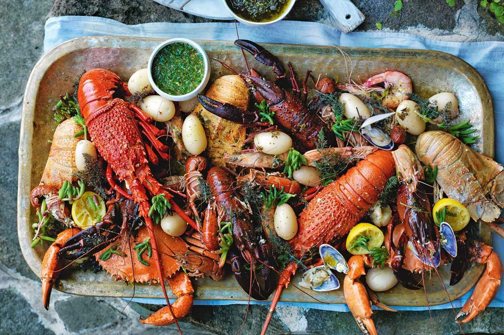

Enjoy your favourite Seafood dishes with Quality ingredients

Our Menu
Welcome to Zenny's, where we celebrate the bounty of the ocean with every dish we serve. Our seafood restaurant is located in the heart of the Philippines and offers the freshest catches and most tantalizing flavors from under the sea. Our culinary journey takes you on a trip where each bite tells a story of craftsmanship, sustainability, and passion for the sea. Our menu features a symphony of flavors and textures, from sweet shrimps to fresh tunas, curated to delight even the most discerning palates. Whether you're a seafood enthusiast or a curious foodie, join us for a memorable dining experience where the ocean's treasures take center stage. Come and enjoy a meal that celebrates the wonders of the deep blue.